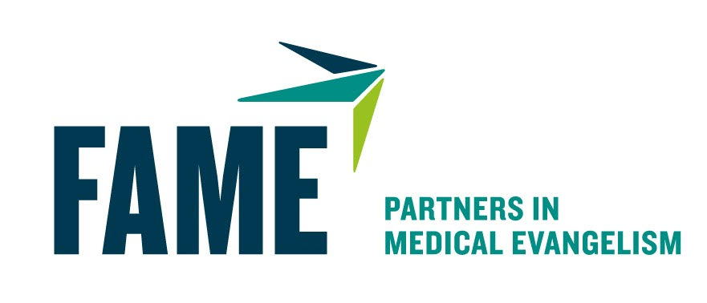
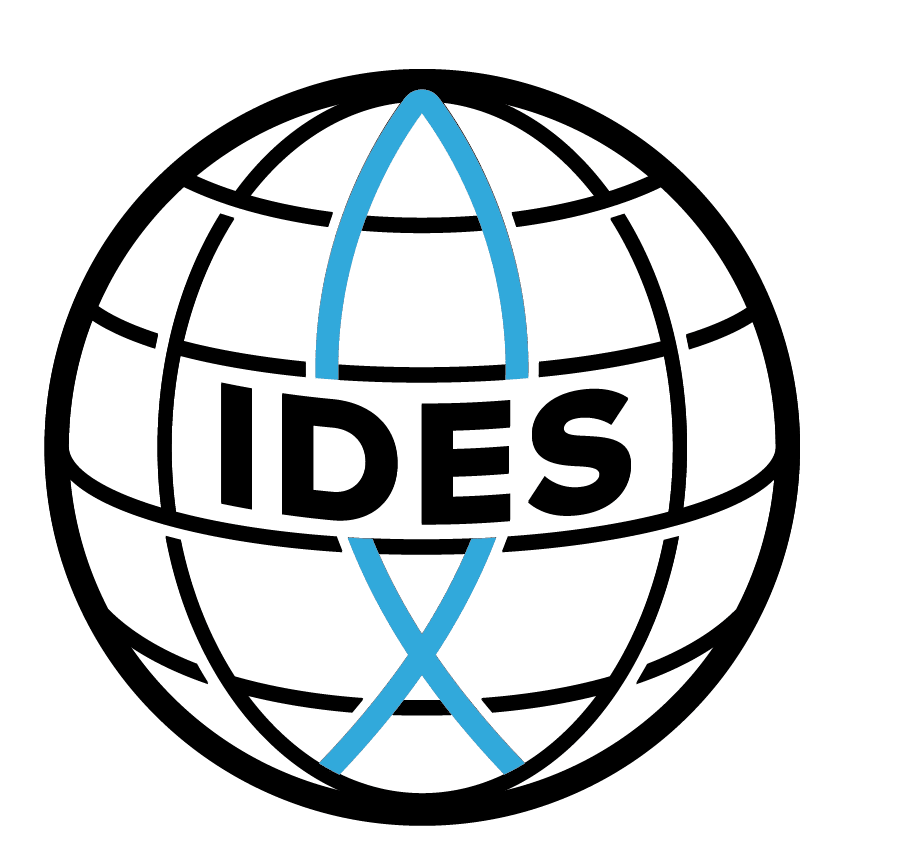

FAME, which stands for Fellowship of Associates of Medical Evangelism,
was the very first ministry to partner with La Costa Colombia in
Barranquilla. FAME conducts medical mission trips around the world but
had never really had a presence in South America.
So, in 2019 La Costa Colombia and our affiliate ministry Casa Firme
hosted a FAME medical mission trip. The trip was a resounding success
and three other trips have been conducted. in 2020, 2021 and 2022 with
a future trip planned for October of 2023.
Along with the medical mission trips, FAME has also conducted CHE
training in the Community Health Center at Casa Firme. CHE stands for
Community Health Evangelism and teaches practical health principles
and uses the lessons to also teach the love of God in Christ.
FAME has further helped in expanding the ministry of Casa Firme by
partnering with La Costa Colombia to provide the funds to purchase the
property for the congregation and the Community Health Center.
La Costa Colombia contributed $12,000.00 and FAME contributed
$19,000.00, while Casa Firme provided the rest. All monies were given
to the Casa Firme Foundation and the foundation is the owner of the
property.

IDES which stands for International Disaster and Emrgency Service
provides assistance world wide in both disasters and in ongoing
emergency situations. One such emergency is hunger.
IDES helps missions establlish feeding ministries which are also used
for evangelism and community education. In 2022 IDES began to partner
with La Costa Colombia to expand the Casa Firme feeding ministry from
2 to 5 days a week. This grant lasts 6 months and could be renewed for
an additional 6 months.
But the idea is for La Costa Colombia and Casa Firme to be diligent
about raising funds during this time to continue the work. Please be
in prayer with us for this effort.
Agristewards is an agricultural outreach that teaches people in many
regions of the world how to maximize yields using available, land and
organic materials. Agritewrds teaches responsible farming and has
helped people to become self reliant and even begin a business selling
their crops.
Along with the agricultural education, Agristewards teaches about the
love of Jesus and uses an approach to discipleship also used by FAME
and La Costa Colombia, which emphasizes direct Bible reading in small
groups which duplicate as they grow. Agristewards has their first trip
to Barranquilla planned for August of 2023.
Entermission, a subsidiary ministry of the International Conference on
Missions, is a gap year ministry for young people who have graduated
from High School but are not yet sure where they feel the Lord is
leading them for further education and work. The year gives them great
Bible education and a three month practical experience on a mission
field.
Entermission sent a group to Barranquilla to live and work with Casa
Firme in January of 2023. This group will end their time at Casa Frime
in April of 2023. Roger Torres, Minister and Executive Director at
Casa Firme, has been very impressed with the spiritual maturity of the
group and plans are being made to host more groups in the future.